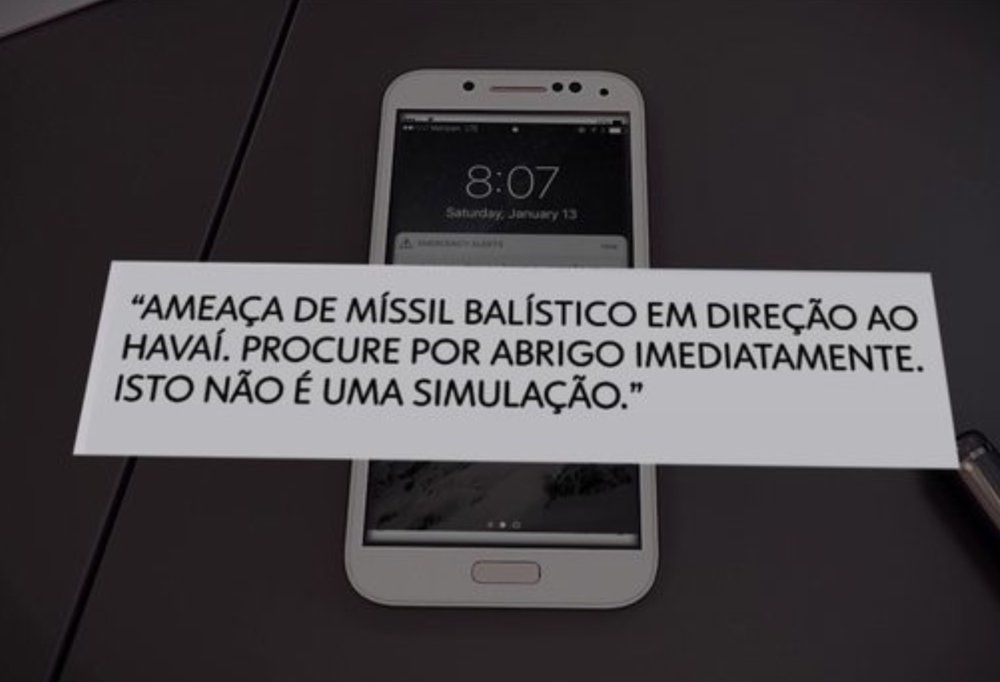
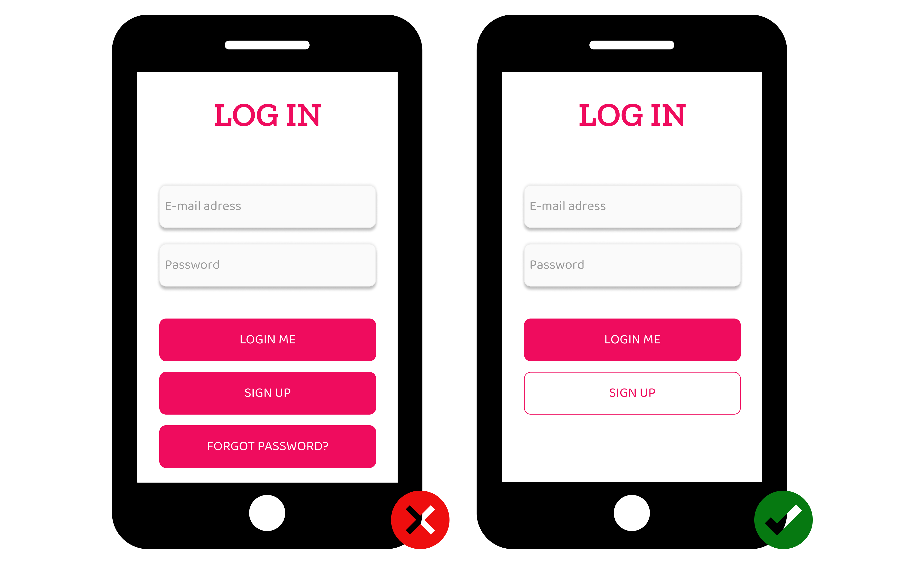
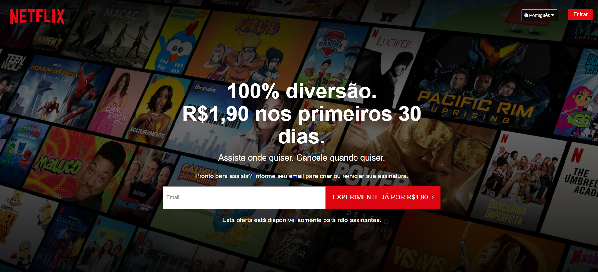
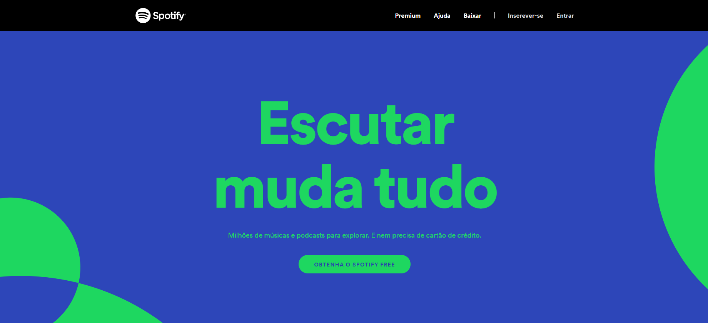
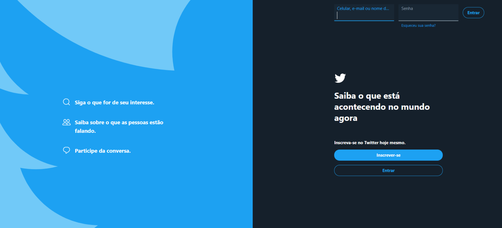
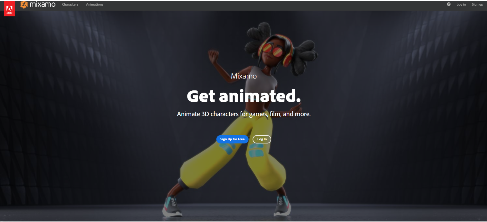
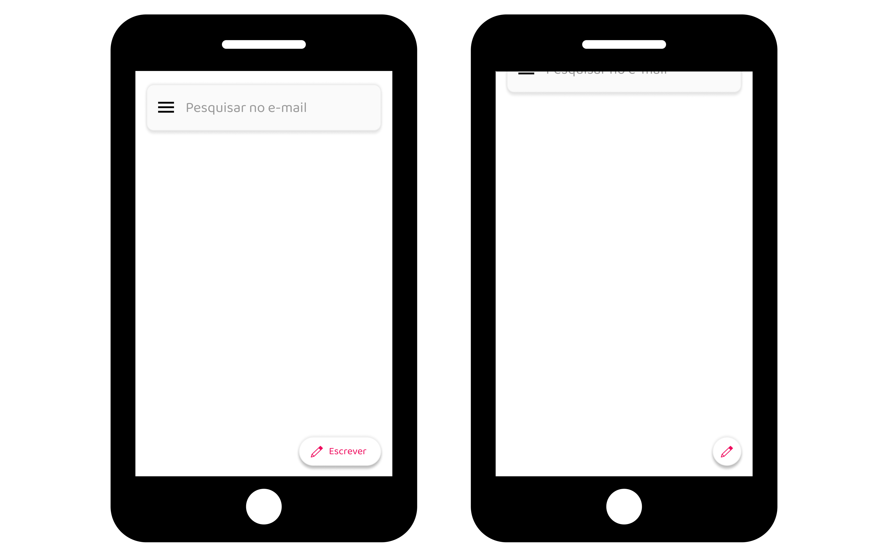
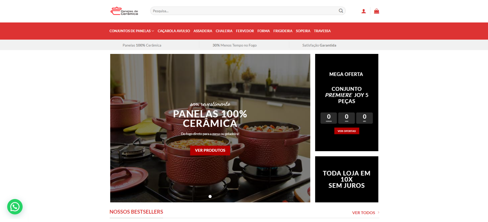
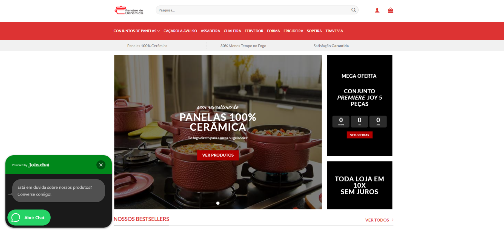

O botão é um dos elementos de UI mais comum e está presente basicamente em todas as interfaces.
Também é o principal elemento para ajudar o usuário a executar uma ação desejada.
Apesar de parecer fácil manipulá-lo, devemos tomar muito cuidado para apresenta-los da forma correta.
Primeiramente, vamos falar/mostrar o porque devemos tomar cuidado com eles.
- Alarme falso provocou pânico entre moradores do Havaí
~O funcionário simplesmente apertou o botão errado por confundi-lo.

- Exemplo de destaques de botões

Neste exemplo, precisamos tomar cuidado com os tipos de botões que usamos e saber definir os primários dos demais.
Precisamos definir a Hierarquia entre as ações de cada um deles para que não haja confusões. ~Igual o exemplo acima
E quais são os tipos de botões que existem?
Existem vários tipos de botões, e claro, cada um com sua função, irei apresentar alguns dos mais usados .
Botão CTA — Call to Action
O botão Call to Action (chamada para ação em português) é basicamente um apelo a uma determinada ação.
Geralmente esse botão tem um destaque diferente ( Como um tanho maior, uma cor diferente ou um contraste para diferencia-lo).
Esse tipo de botão é bem comum em sites vendendo algum tipo de produto ou serviço.
~O Botão de "Experimente" claramente está em destaque

~Compare os botões do menu com o botão principal. Diferente não?!

Botão Primário
É o botão utilizado com mais frequência.
Assim como o CTA, ele é um botão que chama mais atenção (mas não tanto quanto!).
~Assim que você entra na página do Twitter, ele automaticamente te leva para digitar seu Login,
caso contrário, tem o botão primário ( em azul ) para que você possa se inscrever na nova Rede Social.

Botão Secundário
Ele é utilizado quando queremos mostrar duas ações, vale lembrar, que o um deles terá maior destaque, que no caso é o Primário.
O Secundário está junto a ele, porem o destaque dele é menor ( Mas não menos importante! ).

Botões FAB - Floating Action Button
Introduzido pela primeira vez no Material Design ( Sistema de design da Google).
É utilizado para promover uma ação primária. E é recomendado que não se use mais de um!
Inicialmente era utilizado no mobile, mas hoje em dia também é usado na Web, geralmente dando destaque para Chats.
~Conforme vai rolando a página, o botão fina em um tamanho mais compacto.



Botões e mais botões
Alem desses apresentados, ha muitos outros, como:
- Botão de Texto - Geralmente encontrados nos Menus, onde são textos clicáveis e não parecem com botões.
- Botão com Ícone - Os ícones podem se dispor de várias formas: Lado esquedo/direito do texto ou mesmo repesentado apenas pelo ícone.
- Botão Fantasma ( Ghost Button ) - Botão que não possui uma cor de fundo, composta apenas de borda e da tipografia.
- Botão Hambúrguer - Botão que oculta/expande o menu.
- Botão Suspenso - Exibe uma lista suspensa de itens. Geralmente encontrado em botões de configuração.
- Botão Compartilhar - Como o nome diz, serve para compartilhar determinado conteúdo.
e por ai vai...
Dúvidas? Sugestões? Quer bater um papo?
Entre em contato, ficarei muito feliz em receber uma mensagem!
{kind=link}
{kind=link}
{kind=link}
{kind=link}
{kind=link}
{kind=link}
{kind=link}
{kind=link}
{kind=link}